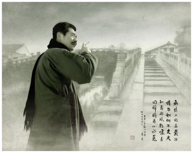
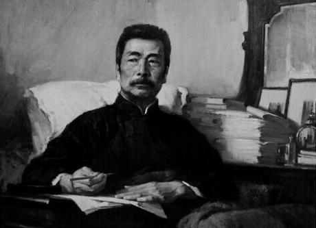

悠悠爱国情
拳拳报国心
横眉冷对千夫指，俯首甘为孺子牛
鲁迅从青年时代起，就立下了“我以我血荐轩辕”的宏伟志向。他成为共产主义者之后，便更加自觉地把自己的一切献给民族解放和社会解放事业。
他对敌人毫不留情，对祖国和人民怀着真挚的爱。“横眉冷对千夫指，俯首甘为孺子牛”这一广为传诵的名句，正是他的爱国主义精神和崇高 人格 的生动写照。为了使祖国摆脱凌辱、人民得到解放，他一生毫不懈怠地进行战斗，一直站在时代潮流的最前列。

彻底的爱国主义精神，使他坚决背叛所出身的封建士大夫阶级，看清中国资产阶级的软弱性、动摇性，坚信只有无产阶级和社会主义才能拯救祖国。 中国知识 分子的“富贵不能淫、贫贱不能移、威武不能屈”的崇高气节，中国人民决不甘受外人凌辱、为维护民族尊严而进行英勇斗争的光荣传统，在鲁迅身上得到集中体现，后来又由于共产主义世界观的指导而得到升华，获得了全新的性质和时代内容。
他无私无畏，吃的是“草”，挤出的是“奶”，是冲锋陷阵的模范，是彻底为人民服务的模范。鲁迅逝世以后，上海人民和全国各地人民为他举行隆重葬礼和悼念活动，上海民众代表在他的灵柩上覆盖了写有“民族魂”三个大字的旗帜。“民族魂”枣这正是中国人民对于自己伟大代表的最中肯贴切的评价。
俄国十月革命胜利后，鲁迅深受鼓舞，与李大钊、陈独秀等当时许多先进知识分子一起，写文章，办杂志，揭开了中国五四运动的序幕。他站在反帝反封建的前列，积极提倡新文化、新思想、新道德，猛烈抨击几千年来的旧文化、旧思想、旧道德。1918年，他发表了我国现代文学史上第一篇白话小说《狂人日记》，小说通过象征的艺术手法，无情地揭露了中国几千年封建社会吃人的本质，强烈地控诉了封建礼教和封建宗法制度的罪恶。此后，鲁迅“一发而不可收”，以彻底的不妥协的姿态，创作了《孔乙己》、《药》、《阿Q正传》等许多小说和大量杂文、随笔、评论，从而成为五四五四运动的先驱和中国现代文学的奠基人。